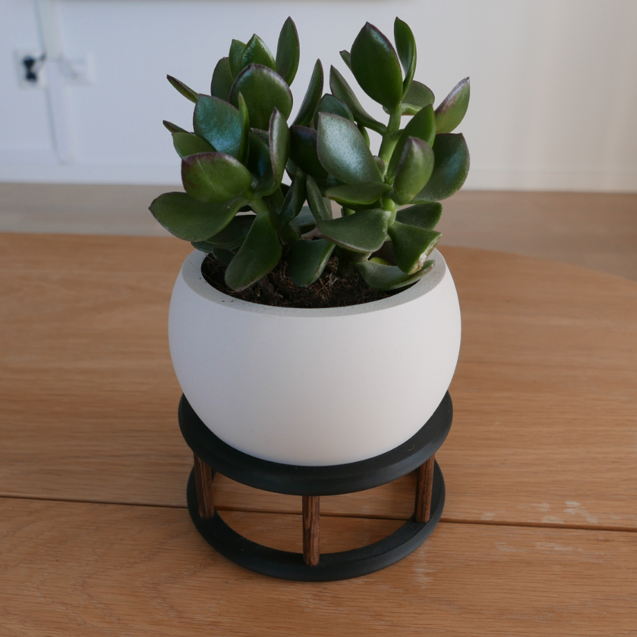
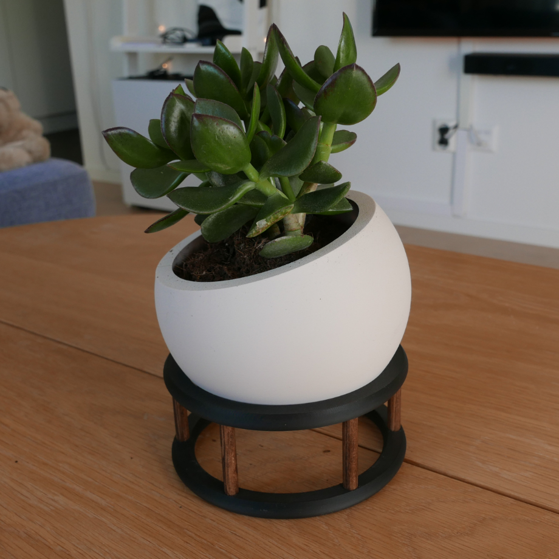
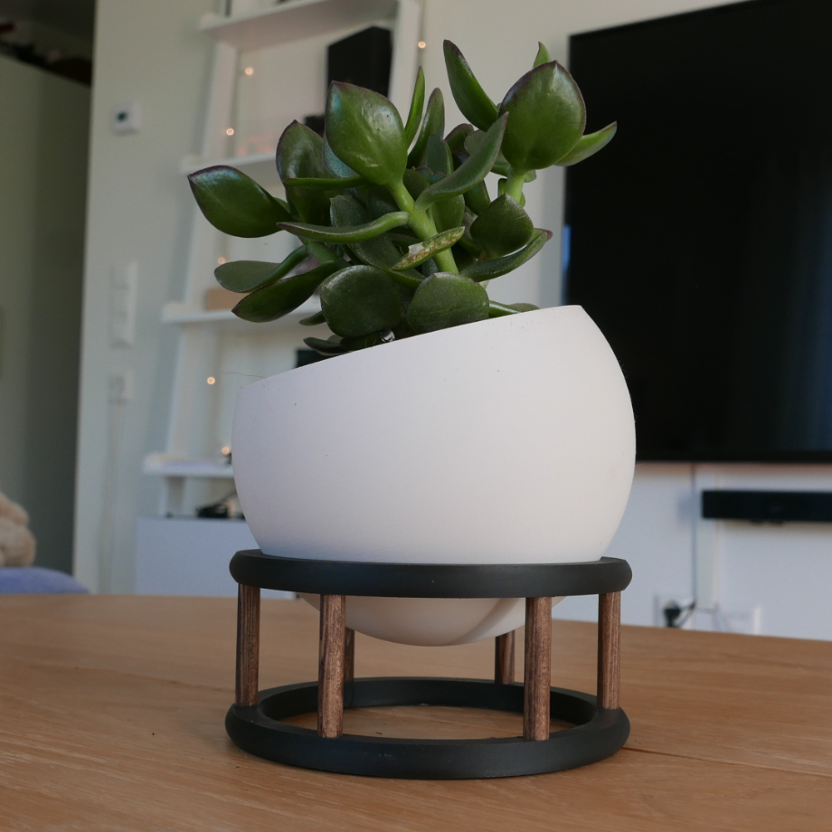
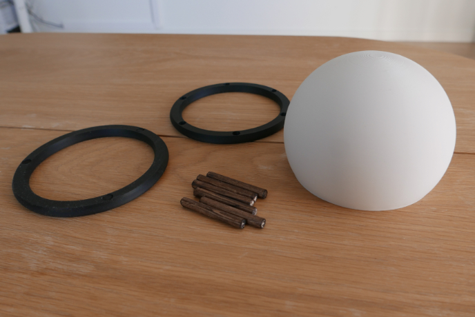
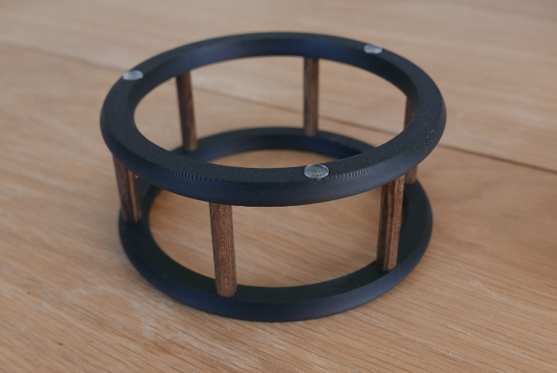
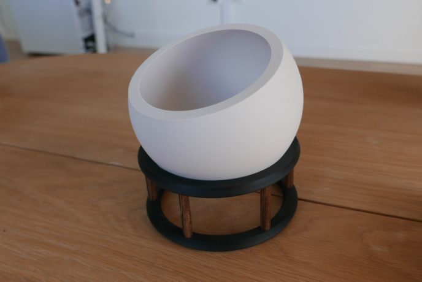

Köpte en liten växt men hade ingen kruka
Gjorde denna lilla bollsaken




Började med att designa alla delarna och skriva ut dem
Såga sen till några 8mm trästavar och betsade dem

Gjorde ganska tighta toleranser så bebövde bara trycka i trästavarna i över och underdelen av botten
Satte på några silikontassar för att den inte ska glida runt så mycket

De va typ de, bara att lägga i klotet i basen och sen kan man vinkla runt det tills de blir som man vill ha de
Behövs inte riktigt något sätt att låsa fast klotet i basen för de sitter ganska stabilt